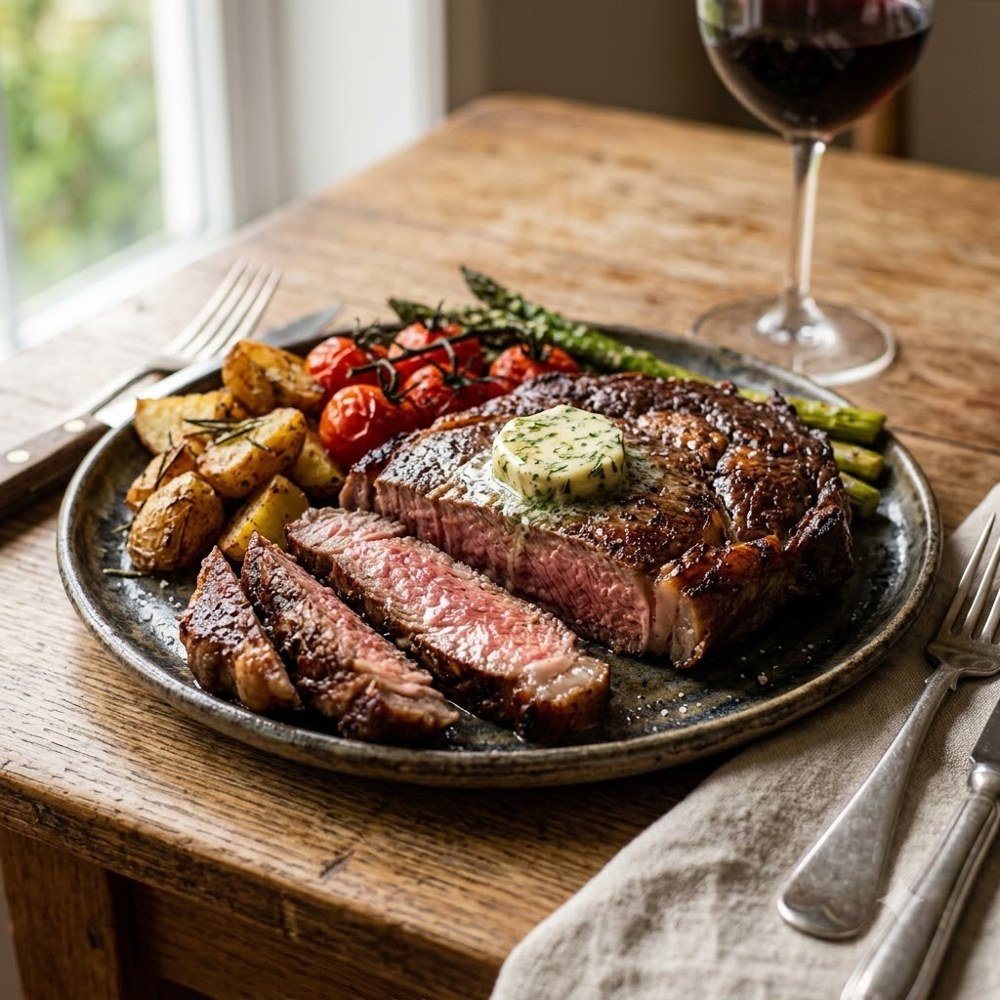

Air Fryer Steak

Air Fryer Steak
Airfryer – Grill 200°C 10 min — Serves 2
🔥 Airfryer🍽 Serves 2
Prep ahead: Bring steak to room temperature for 25 minutes before cooking for even doneness.
Ingredients
- 2 steaks (ribeye/sirloin), ~2.5cm thick
- 1 tbsp oil
- 1 tsp salt
- 1/2 tsp black pepper (kali mirch)
- 1 clove garlic (lehsun), minced (optional)
- 1 tsp butter per steak (optional)
Method
1Preheat: Preheat the Airfryer to 200°C for 4 minutes before adding the food to the basket.
2Pat steaks dry, rub with oil, salt, pepper and garlic.
3Preheat the basket, then place steaks in a single layer.
4Grill at 200°C for 9 minutes for medium (adjust ±2 minutes for doneness), flipping halfway.
5Rest 5 minutes with a pat of butter on top before slicing.